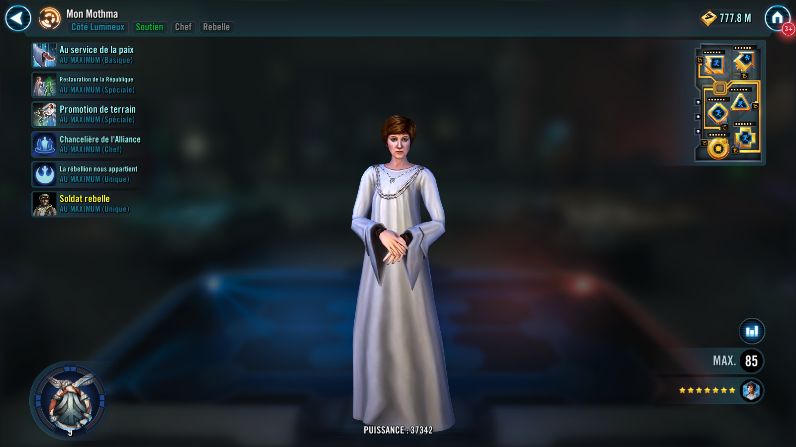
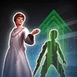
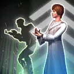

Mon Mothma
Rebel Leader who supports and rallies her allies
Invocation : Rebel Trooper

Rebel Leader who supports and rallies her allies


Dispel all debuffs on the weakest Rebel ally. Rebel allies recover 6% Health and Protection.

Revive a random Rebel Fighter ally with 40% Health and Protection. All Rebel allies have their current Health percentages equalized. Then, Rally Mon Mothma and all Rebel Fighter allies.
Rallied characters act based on their role:
- Tanks Taunt and gain Critical Hit Immunity for 2 turns
- Attackers assist
- Healers and Supports restore 15% Health and Protection to all allies

Summon a Rebel Trooper. If Luthen Rael is an ally, summon a Rebel Commander instead. If a Rebel Trooper is already present, they are promoted to a Rebel Officer.
If they were already a Rebel Officer, they are promoted to a Rebel Commander.
If they were already a Rebel Commander, dispel all debuffs on them, they recover 25% Health and Protection, and reduce the cooldowns of Mon Mothma and all Rebel Fighter allies by 1.
This ability can only be used if all allies are Rebel at the start of battle.
At the start of battle, if Mon Mothma is in the Leader slot, she and all Rebel Fighter allies gain 8% of their combined base Max Health, Max Protection, Offense, Defense, Potency, and Tenacity.
Mon Mothma and Rebel Fighter allies have a 100% chance to assist each other whenever they use an ability during their turn, dealing 90% less damage (limit once per turn per ally). If that ability dealt no damage, the damage penalty is reduced to 45% less damage and that ally dispels all debuffs on the healthiest Rebel ally.

Mon Mothma has +50 Speed. Mon Mothma can't be targeted and is immune to taunt effects.
If there are no other allied combatants at the start of a turn, Mon Mothma escapes from battle.
Light Side, Attacker, Rebel, Rebel Fighter
[Basic] Rebel Bravado: Dispel all buffs on target enemy and deal Physical damage to them.
If this unit has been promoted to Officer or Commander, inflict Daze for 1 turn.
[Special] Rebel Morale: Rebel allies gain Defense Penetration Up for 2 turns.
If this unit has been promoted to Commander, Rally all Rebel Fighter allies.
This ability can only be used if Rebel Trooper has been promoted to Officer or Commander.
[Unique] Rebellion Tactics: Mon Mothma and Rebel Fighter allies have +15% Critical Damage and +30% Tenacity.
If this unit has been promoted to Commander, these bonuses are tripled.
[Unique] Summoned: This unit's stats scale with the summoner's stats. This unit can only be summoned to the ally slot if it's available. This unit can't be summoned in certain raids. This unit can't be revived. If an effect counts defeated units, this unit doesn't count. When there are no other allied combatants, this unit escapes from battle. A unit can't be revived if this summoned unit exists in their slot.